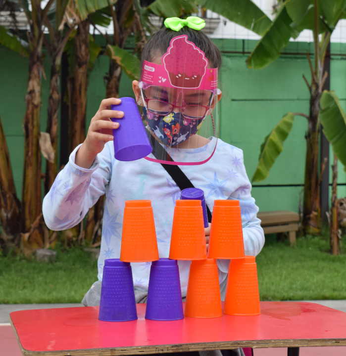

El Colegio Colonial Bilingüe es un centro educativo, comprometido con la enseñanza superior, valores, cultura y civismo.
Fundado en 1977 por un grupo de padres y madres con la ideología de proveer a sus hijos de una iniciativa educativa que
rompiera con los estereotipos de la educación tradicional. Ha sido considerado pionero en la educación bilingüe basada en
la inmersión total al inglés, para alumnos desde Educación Inicial (Estimulación Temprana) hasta Bachillerato.
Desde 1977 hay indicios de la fundación de un espacio educativo con características de un jardín infantil con no más de 15 niños y niñas. En 1991, aparece la autorización de creación y funcionamiento del Centro Educativo Privado "Jardín Infantil Bilingüe" dirigido por Blanca Margoth García López. El incremento de la población estudiantil y la necesidad de crear un seguimiento en la enseñanza implementada a estos niveles, la calidad educativa y lo novedoso de su metodología y enfoque, facilitó que en 1996, se ampliaran los servicios educativos a nivel primario. Desde entonces, aparece en la historia de los centros educativos de Antigua Guatemala, con el nombre del Colegio Colonial Bilingüe. De igual manera, fue hasta el año 2000, que se extendiera los servicios docentes al Ciclo Básico. En la actualidad, mantenemos esta configuración de: nivel Pre primario, Primario, y Bachillerato en Ciencias y Letras, Computación y Diseño.
En nuestro proyecto educativo/pedagógico enfatizamos en que no sólo los estudiantes deben recibir información, ni es un ente pasivo en el que aprender significa recoger o reciclar datos o conocimientos elaborados por otros, sin exigir, para que se dé esta recepción, el esfuerzo de pensar-los, de reflexionar-los (en el sentido de volver sobre ellos para examinar su contenido o estructura, o de volver sobre sí mismo para analizar qué es lo que está haciendo el alumno o cómo está procediendo al actuar como receptor: para advertir si está pensando o no, o si se le exige algún proceso racional o si por el contrario, se le continúa negando el ejercicio de tal capacidad como se ha venido haciendo a través de todo el sistema educativo heredado).
Que el CCB sea una institución educativa pionera y modelo en la creación de un sistema de educación diferente donde convergen las teorías y prácticas vanguardistas que ubican al educando como centro y eje del proceso de enseñanza y aprendizaje. Haciendo que se enfatice en la transmisión de conocimientos y en la capacidad de apropiación crítica y creativa del mismo, en la adquisición de habilidades de aprendizaje, formación de un pensamiento crítico, como base fundamental para la realización personal y con actitudes proactivas hacia una convivencia social no discriminatoria.
Queremos ser reconocidos como una institución que evoluciona y se mantiene a la vanguardia de los nuevos paradigmas y enfoques educativos, formando a los niños y niñas en excelencia académica entendida como la formación de hombres y mujeres con competencias múltiples para enfrentarse a un mundo que no sólo exige capacidad intelectual sino cualidades de adaptación, apertura ante situaciones cambiantes. Propiciamos un ambiente de compromiso, tolerancia y respeto mutuo, haciendo participar en nuestra misión educativa a los padres de familia como primeros educadores de sus hijos y a los alumnos como principales protagonistas de su formación integral.